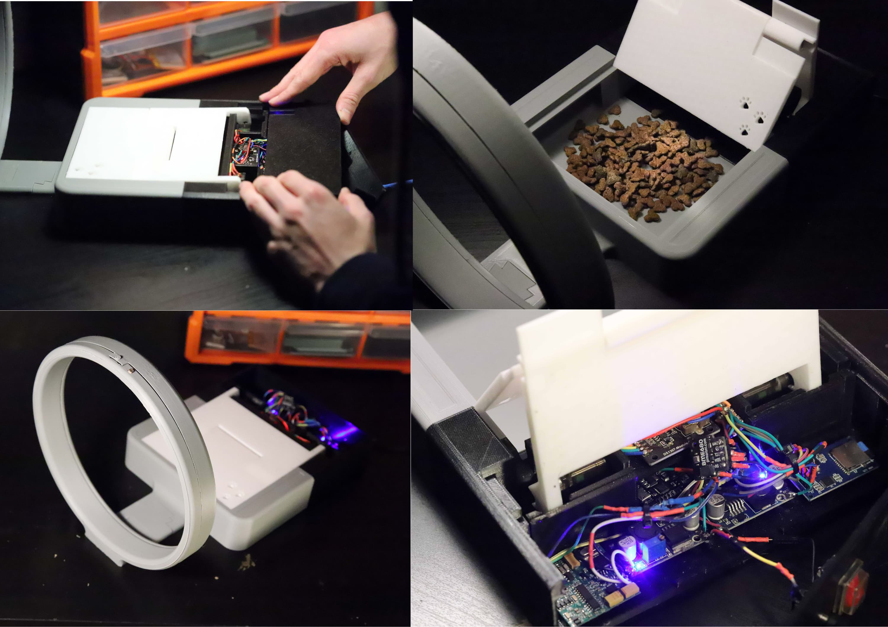
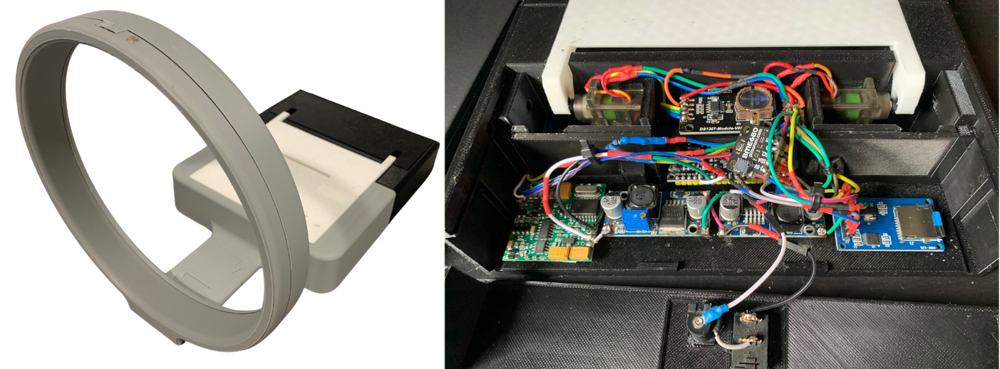

Cat
- An RFID Scanning Feeder
Description
I built an RFID-based cat feeder for our family cat, Misty, developing it over four years to solve our outdoor feeding problem. The device uses two metal gear servos to lift a hinged cover, revealing food only when Misty's microchip is detected. The cover slides along guide-rails and can't rotate backwards, preventing other animals from accessing the food. Through four major iterations, I refined the design from a bulky first attempt to the current version that logs comprehensive analytics to Google Sheets using environmental sensors. The system tracks tag-ID, time, duration, light level, temperature, humidity, pressure, and gas resistance. While the mechanical systems and environmental logging work well, a core challenge remains: cat microchips are inserted vertically—the worst orientation for RFID reading—requiring a more powerful reader for reliable operation.Technical Development
I designed and built all four versions entirely myself, modeling each in Fusion 360 and 3D printing on my modified Ender 3 Pro using about 2kg of filament per build. The current electronics include an RFID reader module with hand-wound 30awg copper coil, ESP32-WROOM dev board (replacing an RP2040 that I accidentally fried), BME680 environmental sensor, LDR for light sensing, and dual buck converters for power management. I tuned the RFID coil using a friend's oscilloscope and 100nF series capacitor, later purchasing an LC meter to optimize the RF tuning. The system connects to Google Sheets API for data logging, creating a comprehensive record of feeding patterns and environmental conditions.Project Highlight
Getting the RFID reader working and watching data populate the Google Sheet was like magic. After weeks of printing, soldering and tuning the coil, seeing a successful tag read was a breath of fresh air. However, disaster struck when I programmed the Arduino RP2040 without disconnecting the power supply. The board was connected to two metal-gear servos drawing up to 1A each, plus WiFi and SD card—far exceeding the 50mA rating. It sparked and died. After half an hour of despair, I remembered finding a spare ESP32-WROOM from an old school project. I ported the code, re-soldered everything, and crucially added a jumper between the ESP32's 5V pin and secondary circuit that I'd disconnect when programming. Within five hours I went from nearly finished, to catastrophe, to getting right back on track.Design Evolution
V1 (2021) mimicked our manual feeder but proved too bulky. V2 (2022) introduced a sleeker profile with basic RFID functionality and hand-tuned coil. Without an inductance meter, I adjusted windings by trial and error while testing read distance. V3 (2023) attempted automation with a feed hopper and dual auger system, but the screws frequently jammed—simpler proved better. After getting Misty chipped and testing V2.2 (2024), field testing revealed she couldn't reach the reader. This led to V4's complete redesign with simplified coil front and walk-through access. Despite better measurements and resonance capacitor adjustments, the perpendicular chip orientation remained problematic, confirming we need a stronger reader module.Challenges and Context
I built this feeder because magpies, cats, and wild dogs were eating Misty's food outdoors. Commercial RFID feeders aren't weatherproof and cost hundreds of euros. Working in my bedroom with limited tools—initially a cheap soldering iron taking 15 minutes to heat—I faced significant constraints. Ireland gets rain 225 days per year, requiring weatherproofing. My 225mm³ printer build area meant careful design choices. The fundamental physics issue persists: cat microchips are inserted vertically in their necks, the worst orientation for RFID readers needing parallel alignment. Three weeks ago, a wild dog dragged our food waste bin down the driveway—the current PLA version wouldn't survive outdoors. For a lasting solution, I'm considering a completely different approach using computer vision with a small YOLO model trained on photos of Misty.Links and Resources

